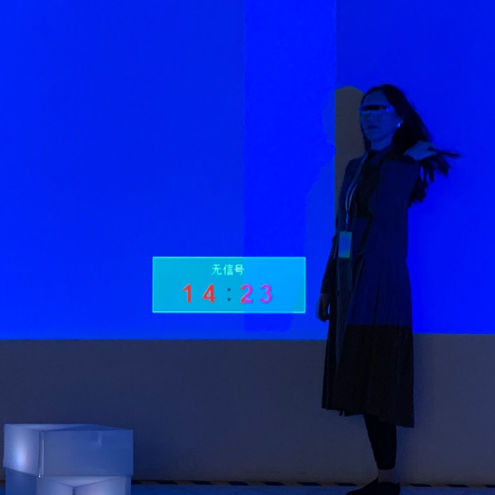

Ruixuan Li (Rashel) is an independent curator, art writer, and researcher who is currently based in Ithaca, NY. She has co-curated and contributed to several multimedia exhibitions and public events for art institutions in San Francisco Bay Area, such as Spectrum Art Auction, Essinova, Wattis Institute for the Contemporary Arts, and Kadist Art Foundation, etc. She has been a contributing writer for The Arts Newspaper China, ARTCO, and @LOFT Magazine for many years.
Alongside her curatorial and criticism work, she started making artworks since 2019. Her work The Foolish Old Man Project (collaborated with Mengni Zhang and Zhuoxi Song) was presented at 2019 Bi-City Biennale of Urbanism\Architecture (Shenzhen). Li was also selected as an artist-in-residence by a co-sponsored program of SallyProject (Shenzhen) and Gazetteer-Novel (Hangzhou) in December 2019, and then her work, Lychee Tower, was included in the Nomination Exhibition of Chinese Young Artists & Form of Young Art Critics that was organized by Guan Shanyue Art Museum (Shenzhen).
Feb 2019 DE-CONSTRUKT Residency
Ruixuan has led a nomadic way of life since age 8. With strong nostalgia about all those cities she had been living in and her birthplace where was recently demolished, she maintains a curatorial focus on how to preserve collective memory against the loss of place in her many art projects. For her, community is a vessel for its residents’ common emotions, and an ongoing memorial process is essential to foster the community’s emotional identification. Realizing that the entire Red Hook community has been heavily affected by the storm since 2012, she decided to learn about how Red Hook has changed from one of the most authentic New York gentrified neighborhoods after Sandy. Through the media of urban legendary, Ruixuan tries to narrate the complexity of the residents’ desires, preoccupations and fears of this era.
During her artist residency at DE-CONSTRUKT in Feburary 2019, Ruixuan interviewed plenty of Red Hook locals and collected their personal memories about what Sandy has brought to the community in the past 6 years. The contributors range from a wide spectrum of backgrounds: nonprofit organizations, small business owners, low-income residents, and newly relocated artists, etc. She also took plenty of photos in the streets, which had prompted her storytelling as well as visual content creation with inspiring materials.